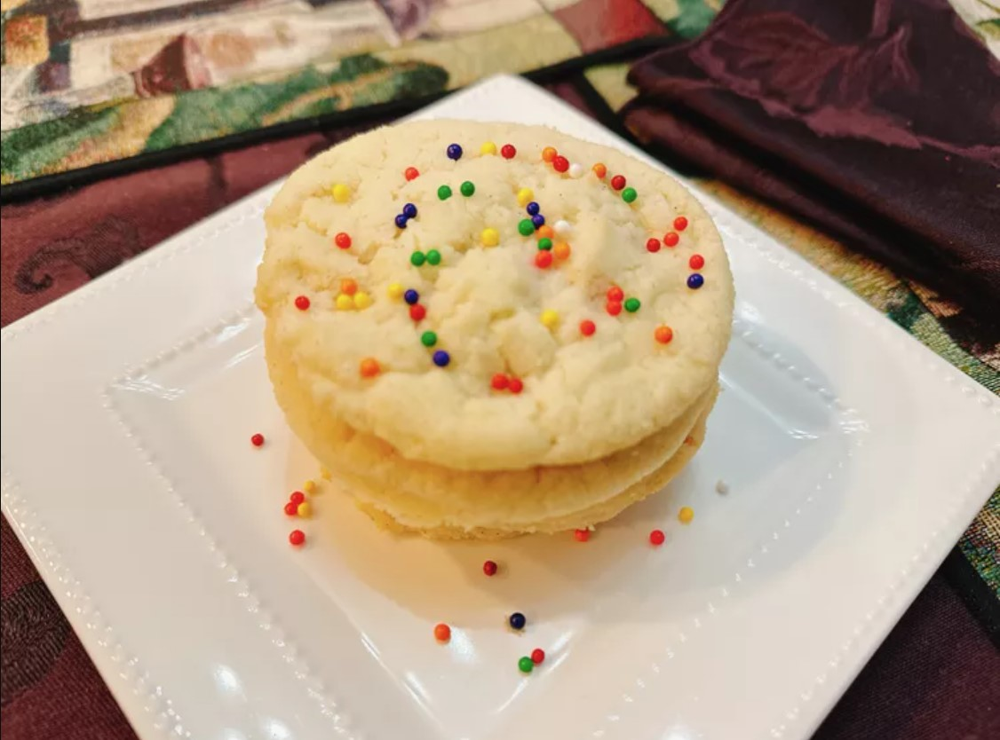

Sugar Cookies Recipes

3 ingredient sugar cookies
These 3 ingredient sugar cookies are a nod to the 3-ingredient peanut butter cookies you've probably heard of—they're super simple, and this small batch is easy to make in under a half hour.
Ingredients
- 1/2 cup unsalted butter, softened
- 1/2 cup vanilla sugar
- 1 cup self-rising flour
- 1 tablespoon nonpareils, or as needed (optional)
Directions
- Preheat the oven to 350 degrees F (180 degrees C). Grease a baking sheet or line with parchment.
- In a mixing bowl, beat the butter with an electric mixer until smooth. Add the sugar and beat until combined. Beat in flour until combined.
- Using a cookie scoop, portion dough 2 inches apart onto the prepared baking sheet.
- Bake in the preheated oven until edges of cookies are set, about 14 minutes.
- Sprinkle immediately with nonpareils, if using. Allow cookies to cool completely before removing.